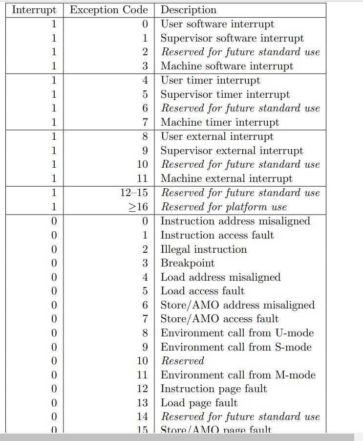
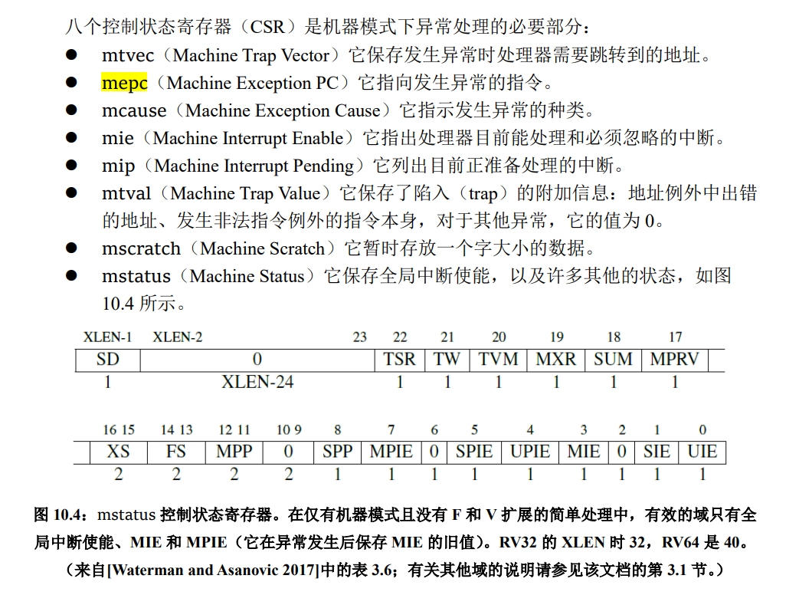
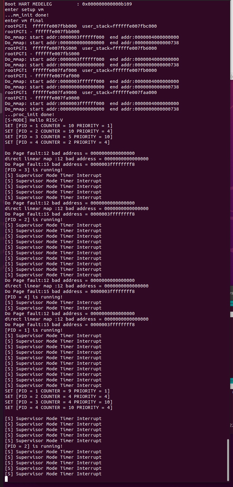
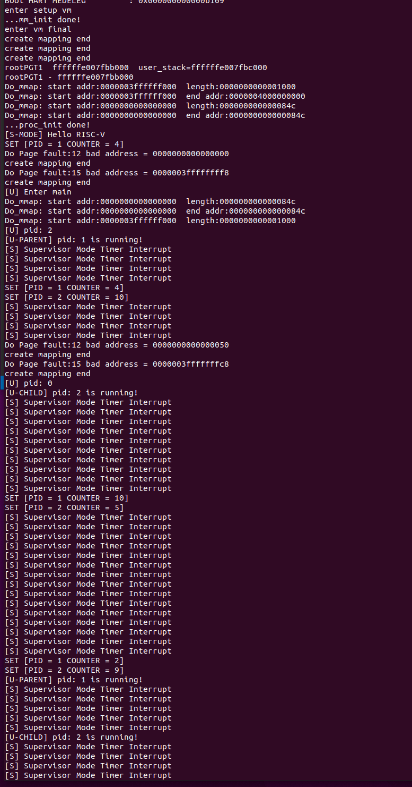
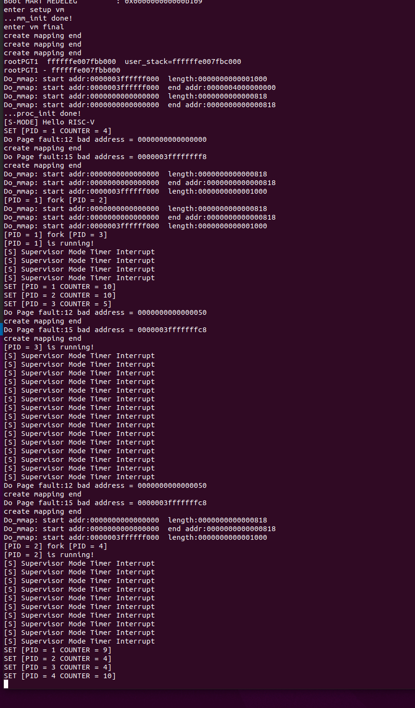

在linux系统中，vm_area_struct 是虚拟内存管理的基本单元， vm_area_struct 保存了有关连续虚拟内存区域(简称vma)的信息。linux 具体某一进程的虚拟内存区域映射关系可以通过 procfs【Link】 读取 /proc/pid/maps 的内容来获取:
比如，如下一个常规的 bash 进程，假设它的进程号为 7884 ，则通过输入如下命令，就可以查看该进程具体的虚拟地址内存映射情况(部分信息已省略)。
1#cat /proc/7884/maps2556f22759000-556f22786000 r--p 00000000 08:05 16515165 /usr/bin/bash3556f22786000-556f22837000 r-xp 0002d000 08:05 16515165 /usr/bin/bash4556f22837000-556f2286e000 r--p 000de000 08:05 16515165 /usr/bin/bash5556f2286e000-556f22872000 r--p 00114000 08:05 16515165 /usr/bin/bash6556f22872000-556f2287b000 rw-p 00118000 08:05 16515165 /usr/bin/bash7556f22fa5000-556f2312c000 rw-p 00000000 00:00 0 [heap]87fb9edb0f000-7fb9edb12000 r--p 00000000 08:05 16517264 /usr/lib/x86_64-linux-gnu/libnss_files-2.31.so97fb9edb12000-7fb9edb19000 r-xp 00003000 08:05 16517264 /usr/lib/x86_64-linux-gnu/libnss_files-2.31.so 10...117ffee5cdc000-7ffee5cfd000 rw-p 00000000 00:00 0 [stack]127ffee5dce000-7ffee5dd1000 r--p 00000000 00:00 0 [vvar]137ffee5dd1000-7ffee5dd2000 r-xp 00000000 00:00 0 [vdso]14ffffffffff600000-ffffffffff601000 --xp 00000000 00:00 0 [vsyscall]从中我们可以读取如下一些有关该进程内虚拟内存映射的关键信息：
vm_start : (第1列) 指的是该段虚拟内存区域的开始地址vm_end : (第2列) 指的是该段虚拟内存区域的结束地址vm_flags : (第3列) 该 vm_area 的一组权限(rwx)标志， vm_flags 的具体取值定义可参考linux源代码的 linux/mm.hvm_pgoff : (第4列) 虚拟内存映射区域在文件内的偏移量vm_file : (第5/6/7列)分别表示：映射文件所属设备号/以及指向关联文件结构的指针(如果有的话，一般为文件系统的inode)/以及文件名其它保存在 vm_area_struct 中的信息还有：
vm_ops : 该vm_area中的一组工作函数vm_next/vm_prev: 同一进程的所有虚拟内存区域由链表结构链接起来，这是分别指向前后两个 vm_area_struct 结构体的指针缺页异常是一种正在运行的程序访问当前未由内存管理单元（ MMU ）映射到虚拟内存的页面时，由计算机硬件引发的异常类型。访问未被映射的页或访问权限不足，都会导致该类异常的发生。处理缺页异常通常是操作系统内核的一部分。当处理缺页异常时，操作系统将尝试使所需页面在物理内存中的位置变得可访问（建立新的映射关系到虚拟内存）。而如果在非法访问内存的情况下，即发现触发 Page Fault 的虚拟内存地址（ Bad Address ）不在当前进程 vm_area_struct 链表中所定义的允许访问的虚拟内存地址范围内，或访问位置的权限条件不满足时，缺页异常处理将终止该程序的继续运行。
RISC-V 异常处理：当系统运行发生异常时，可即时地通过解析csr scause寄存器的值，识别如下三种不同的Page Fault。

SCAUSE 寄存器指示发生异常的种类：
| Interrupt | Exception Code | Description |
|---|---|---|
| 0 | 12 | Instruction Page Fault |
| 0 | 13 | Load Page Fault |
| 0 | 15 | Store/AMO Page Fault |
ecall指令的含义是向执行环境发出请求，我们在lab4~6中实现的sbi_ecall就是通过ecall向权限更高的M模式发送请求，完成类似于打印字符，设置时钟计时等。在本次实验中，我们只实现M模式，在执行指令ecall后会触发异常Environmrnt call from M-mode，需要对相关寄存器进行设置并跳转到异常处理地址。
异常指令的 PC 被保存在 mepc 中，PC 被设置为 mtvec。（对于同步异常，mepc 指向导致异常的指令；对于中断，它指向中断处理后应该恢复执行的位置。）
根据异常来源设置 mcause（如图 10.3 所示），并将 mtval 设置为出错的地址或 者其它适用于特定异常的信息字。 (这个实验不需要)
处理缺页异常时所需的信息如下：
触发 Page Fault 时访问的虚拟内存地址 VA。当触发 page fault 时，stval 寄存器被被硬件自动设置为该出错的VA地址
导致 Page Fault 的类型：
发生 Page Fault 时的指令执行位置，保存在 sepc 中
当前进程合法的 VMA 映射关系，保存在vm_area_struct链表中

Direct模式，即发生异常时跳转到mtvec所指向的地址进行处理。MIE(3)即可。fork 系统调用fork()通过复制当前进程创建一个新的进程，新进程称为子进程，而原进程称为父进程。fork成功时返回：子进程的pid，子进程返回：0。fork失败则父进程返回：-1。task_struct、pgd、mm_struct 以及父进程的 user stack 等信息。copy-on-write 机制，fork 创建的子进程首先与父进程共享物理内存空间，直到父子进程有修改内存的操作发生时再为子进程分配物理内存。proc.h 如下：x1/* vm_area_struct vm_flags */2
6struct vm_area_struct {7 struct mm_struct *vm_mm; /* The mm_struct we belong to. */8 uint64 vm_start; /* Our start address within vm_mm. */9 uint64 vm_end; /* The first byte after our end address 10 within vm_mm. */11
12 /* linked list of VM areas per task, sorted by address */13 struct vm_area_struct *vm_next, *vm_prev;14
15 uint64 vm_flags; /* Flags as listed above. */16};17
18struct mm_struct {19 struct vm_area_struct *mmap; /* list of VMAs */20};21
22struct task_struct {23 struct thread_info* thread_info;24 uint64 state;25 uint64 counter;26 uint64 priority;27 uint64 pid;28
29 struct thread_struct thread;30
31 pagetable_t pgd;32
33 struct mm_struct *mm;34};每一个 vm_area_struct 都对应于进程地址空间的唯一区间。
为了支持 Demand Paging（见 4.3），我们需要支持对 vm_area_struct 的添加，查找。
find_vma 函数：实现对 vm_area_struct 的查找
addr，遍历链表 mm 包含的 vma 链表，找到该地址所在的 vm_area_struct。vm_area_struct 都不包含该地址，则返回 NULL。xxxxxxxxxx211/*2* @mm : current thread's mm_struct3* @address : the va to look up4*5* @return : the VMA if found or NULL if not found6*/7struct vm_area_struct *find_vma(struct mm_struct *mm, uint64 addr){8 if(mm == NULL) return NULL;9 struct vm_area_struct *temp = mm->mmap;10 if(temp == NULL) return NULL;11 while(temp->vm_next){12 if(temp->vm_start <= addr && temp->vm_end > addr){13 return temp;14 }15 temp = temp->vm_next;16 }17 if(temp->vm_start <= addr && temp->vm_end > addr){18 return temp;19 }20 else return NULL;21}do_mmap 函数：实现 vm_area_struct 的添加
vm_area_struct 结构体，根据传入的参数对结构体赋值，并添加到 mm 指向的 vma 链表中。[addr, addr + length) 是否与 vma 链表中已有的 vm_area_struct 重叠，如果存在重叠，则需要调用 get_unmapped_area 函数寻找一个其它合适的位置进行映射。xxxxxxxxxx621/*2 * @mm : current thread's mm_struct3 * @addr : the suggested va to map4 * @length : memory size to map5 * @prot : protection6 *7 * @return : start va8*/9uint64 do_mmap(struct mm_struct *mm, uint64 addr, uint64 length, int prot){10 printk("Do_mmap: start addr:%lx length:%lx\n",addr, length);11 12 struct vm_area_struct *newnode = (struct vm_area_struct *)kalloc();13 newnode->vm_prev = NULL;14 newnode->vm_next = NULL;15 newnode->vm_flags = prot;16 newnode->vm_mm = mm;17 struct vm_area_struct *temp = mm->mmap;18 int flag = 0;19 if(temp == NULL){20 mm->mmap = newnode;21 newnode->vm_start = addr;22 newnode->vm_end = addr + length;23 return addr;24 }25 if(temp->vm_start > addr){//添加在链表最前面26 if(temp->vm_start <= addr + length){//页表前面没有空间，那就得放后面27 addr = get_unmapped_area(mm,length);28 flag = 1;29 }30 else{//页表前面有空间31 temp->vm_prev = newnode;32 newnode->vm_next = temp;33 mm->mmap = newnode;34
35 newnode->vm_start = addr;36 newnode->vm_end = addr + length;37 //printk("Do_mmap: start addr:%lx end addr:%lx\n",newnode->vm_start, newnode->vm_end);38 return addr;39 }40 }41 while(temp->vm_next){ //addr必然在当前块start后面，再分end前、后讨论42 if(addr < temp->vm_end){ //如果addr在当前vma-end的前面，那必然冲突了43 if(!flag) addr = get_unmapped_area(mm, length);44 break;45 }46 if(addr >= temp->vm_end && addr < temp->vm_next->vm_start){ //如果addr在当前vma和下一个vma之间空挡47 if(temp->vm_next->vm_start < addr + length) //如果本次length会覆盖到下一个vma48 if(!flag) addr = get_unmapped_area(mm, length);49 break;//本次length不会覆盖下一个vma50
51 }52 temp=temp->vm_next;53 }54
55 newnode->vm_start = addr;56 newnode->vm_end = addr + length;57 if(temp->vm_next) temp->vm_next->vm_prev = newnode;58 newnode->vm_next = temp->vm_next;59 newnode->vm_prev = temp;60 temp->vm_next = newnode;61 return addr;62}get_unmapped_area 函数：用于解决 do_mmap 中 addr 与已有 vma 重叠的情况
length（按页对齐）的虚拟地址区域。0 地址开始向上以 PGSIZE 为单位遍历，直到遍历到连续 length 长度内均无已有映射的地址区域，将该区域的首地址返回。xxxxxxxxxx171uint64 get_unmapped_area(struct mm_struct *mm, uint64 length){2 uint64 *i, *j;3 //遍历vma链表寻找之中空的那个4 //printk("get unmapped area length %x\n",length);5 struct vm_area_struct *temp = mm->mmap;6 //printk("mmap %lx - %lx\n",temp->vm_start, temp->vm_end);7 uint64 addr=0;8 if(length <= temp->vm_start) return addr;9 while(temp->vm_next){10 //printk("mmap %lx - %lx\n",temp->vm_start, temp->vm_end);11 if(temp->vm_next->vm_start - temp->vm_end >= length){12 return temp->vm_end;13 }14 temp = temp->vm_next;15 }16 return temp->vm_end;17}Demand Paging
do_mmap 映射页面时，我们不直接对页表进行修改，只是在该进程所属的 mm->mmap 链表上添加一个 vma 记录。vma，根据 vma 中的信息对页表进行映射。修改 task_init 函数代码，更改为 Demand Paging
删除之前实验中对 U-MODE 代码，栈进行映射的代码
调用 do_mmap 函数，为进程的 vma 链表添加新的 vm_area_struct 结构，从而建立用户进程的虚拟地址空间信息，包括两个区域：
USER_START 开始，大小为 uapp_end - uapp_start， 权限为 VM_READ | VM_WRITE | VM_EXEC[USER_END - PGSIZE, USER_END) ，权限为 VM_READ | VM_WRITE在完成上述修改之后，如果运行代码我们可以截获一个 page fault。如下图 （注意：由于试例代码尚未正确处理 page fault， 所以我们可以看到一系列的 page fault ）
xxxxxxxxxx231// Instruction Page Fault2scause = 0x000000000000000c, sepc = 0x0000000000000000, stval = 0x0000000000000000 3
4// Store/AMO Page Fault: sepc 是 code address， stval 是 写入的地址 (位于 user stack 内)。5scause = 0x000000000000000f, sepc = 0x0000000000000070, stval = 0x0000003ffffffff8 6
7************************** uapp asm **************************8 .....9
10 Disassembly of section .text.main:11
12 000000000000006c <main>:13 6c: fe010113 addi sp,sp,-3214 70: 00113c23 sd ra,24(sp) <- Page Fault15 74: 00813823 sd s0,16(sp)16 78: 02010413 addi s0,sp,3217 7c: fbdff0ef jal ra,38 <fork>18 80: 00050793 mv a5,a019 84: fef42223 sw a5,-28(s0)20 88: fe442783 lw a5,-28(s0)21
22......23************************** uapp asm **************************实现 Page Fault 的检测与处理
trap.c，添加捕获 Page Fault 的逻辑。Page Fault 之后，需要实现缺页异常的处理函数 do_page_fault。create_mapping 对页表进行映射时，需要对 Bad Address 进行判断。若 Bad Address 在用户态代码段的地址范围内（即 USER_START 开始的一段内存），则需要将其映射到 uapp_start 所在的物理地址；若是其它情况，则用 kalloc 新建一块内存区域，并将 Bad Address 所属的页面映射到该内存区域。xxxxxxxxxx491void do_page_fault(struct pt_regs *regs, unsigned long scause) {2 /*3 1. 通过 stval 获得访问出错的虚拟内存地址（Bad Address）4 2. 通过 scause 获得当前的 Page Fault 类型5 3. 通过 find_vm() 找到对应的 vm_area_struct6 4. 通过 vm_area_struct 的 vm_flags 对当前的 Page Fault 类型进行检查7 4.1 Instruction Page Fault -> VM_EXEC8 4.2 Load Page Fault -> VM_READ9 4.3 Store Page Fault -> VM_WRITE10 5. 最后调用 create_mapping 对页表进行映射11 */12 uint64 bad_address = csr_read(stval);13 uint64 page_fault_kind = scause;14 int term=0b10001;//valid15 printk("Do Page fault:%d bad address = %lx\n",scause, bad_address);16 uint64 a = csr_read(satp);17 uint64 *pgtbl;18 pgtbl = ((unsigned long)current->pgd+ PA2VA_OFFSET);19 //printk("pgd:%lx phy pgd = %lx\n",pgtbl,(unsigned long)pgtbl - PA2VA_OFFSET);20 struct vm_area_struct *temp = find_vma(current->mm, bad_address);21 if(temp == NULL){22 do_mmap(current->mm, bad_address, PGSIZE, 0);23 temp = current->mm->mmap;24 }25 else {26 term |= (temp->vm_flags << 1);27 }28 switch(page_fault_kind){29 case 12: temp->vm_flags |= VM_EXEC; term |= 0b1000; break;//readable30 case 13: temp->vm_flags |= VM_READ; term |= 0b0010; break;//writable31 case 15: temp->vm_flags |= VM_WRITE; term |= 0b0100; break;//executable32 default: break;33 }34 35 36 if(bad_address >= USER_START && bad_address < (USER_START + (unsigned long)uapp_end - (unsigned long)uapp_start)){37 create_mapping(pgtbl, temp->vm_start, uapp_start - PA2VA_OFFSET, (unsigned long)uapp_end - (unsigned long)uapp_start, 0b11111);38 //printk("direct linear map :%d bad address = %lx\n",scause, bad_address);39 }40 else if(temp->vm_start == USER_END - PGSIZE){41 unsigned long pa = current->user_sp - PGSIZE; // virtual address42 create_mapping(pgtbl, temp->vm_start, pa - PA2VA_OFFSET, PGSIZE, 0b10111);43 }44 else{45 uint64 pa = kalloc();//虚拟地址46 create_mapping(pgtbl, temp->vm_start, pa - PA2VA_OFFSET, PGSIZE, term);47 }48 //create_mapping(uint64 *pgtbl, uint64 va, uint64 pa, uint64 sz, int perm) 49}task_init 函数中修改为仅初始化一个进程，之后其余的进程均通过 fork 创建。task_struct 增加结构成员 trapframe， 如下：xxxxxxxxxx151struct task_struct {2 struct thread_info* thread_info;3 uint64 state;4 uint64 counter;5 uint64 priority;6 uint64 pid;7
8 struct thread_struct thread;9
10 pagetable_t pgd;11
12 struct mm_struct *mm;13 14 struct pt_regs *trapframe;15};trapframe 成员用于保存异常上下文，当我们 fork 出来一个子进程时候，我们将父进程用户态下的上下文环境复制到子进程的 trapframe 中。当子进程被调度时候，我们可以通过 trapframe 来恢复该上下文环境。
SYS_CLONE，系统调用号为 220。xxxxxxxxxx11clone 函数的相关代码如下， 为了简单起见 clone 只接受一个参数 pt_regs *。xxxxxxxxxx71void forkret() {2 ret_from_fork(current->trapframe);3}4
5uint64 clone(struct pt_regs *regs) {6 return do_fork(regs);7}实现 do_fork
参考 task_init 创建一个新的子进程，设置好子进程的 state, counter, priority, pid 等，并将该子进程正确添加至到全局变量 task 数组中。子进程的 counter 可以先设置为0，子进程的 pid 按照自定的规则设置即可（例如每 fork 一个新进程 pid 即自增）。
创建子进程的用户栈，将子进程用户栈的地址保存在 thread_info->user_sp 中，并将父进程用户栈的内容拷贝到子进程的用户栈中。
正确设置子进程的 thread 成员变量。
fork 系统调用后，task 数组会增加子进程的元数据，子进程便可能在下一次调度时被调度。当子进程被调度时，即在 __switch_to 中，会从子进程的 thread 等成员变量中取出在 do_fork 中设置好的成员变量，并装载到寄存器中。thread.ra 为 forkret，设置 thread.sp, thread.sscratch 为子进程的内核栈 sp，设置 thread.sepc 为父进程用户态 ecall 时的 pc 值。task_init，设置 thread.sstatus。trap_frame 的设置，先思考清楚整个流程，再进行编码。正确设置子进程的 pgd 成员变量，为子进程分配根页表，并将内核根页表 swapper_pg_dir 的内容复制到子进程的根页表中，从而对于子进程来说只建立了内核的页表映射。
正确设置子进程的 mm 成员变量，复制父进程的 vma 链表。
正确设置子进程的 trapframe 成员变量。将父进程的上下文环境（即传入的 regs）保存到子进程的 trapframe 中。
trap_handler 之前我们将 用户态 sp 与 内核态 sp 进行了交换，因此需要修改 trapframe->sp 为父进程的 用户态 sp。trapframe->a0 修改为 0。注意，对于 sepc 寄存器，可以在 __switch_to 时根据 thread 结构，随同 sstatus, sscratch, satp 一起设置好，也可以在 ret_from_fork 里根据子进程的 trapframe 设置。同时需要正确设置 sepc + 4。 选择自己喜欢的实现方式即可。
返回子进程的 pid。
xxxxxxxxxx531
2uint64 do_fork(struct pt_regs *regs) { 3 int sum=total_task, i=total_task;4 task[i] = (struct task_struct *)kalloc(); 5 task[i]->state = TASK_RUNNING;6 task[i]->counter = 0;7 task[i]->priority = rand();8 task[i]->pid = total_task;9 task[i]->thread.ra = (uint64)forkret;10 task[i]->thread.sp = (uint64)task[i] + PGSIZE;//s-MODE stack11 task[i]->mm = (struct mm_struct *)kalloc();12 task[i]->mm->mmap = NULL;13 task[i]->trapframe = (struct pt_regs *)kalloc();14 //set SUM(bit 18, so kernel mode can access user mode page), 15 //set SPIE(bit 5, so interruption is enabled after sret), 16 //set SPP to be 0, so after calling mret, the system can return to user mode 17 task[i]->thread.sstatus = csr_read(sstatus);18 task[i]->thread.sstatus = task[i]->thread.sstatus | 0x00040020; 19 csr_write(sstatus, task[i]->thread.sstatus); 20
21 task[i]->thread.sepc = regs->sepc;//父进程ecall时的pc22 task[i]->thread.sscratch = (uint64)task[i] + PGSIZE;23
24 total_task++;25 unsigned long * user_stack = (unsigned long *)kalloc();//U-MODE栈的虚拟地址26 task[i]->user_sp = (uint64)user_stack + PGSIZE;//u-MODE stack27 for(int j=0; j<512; j++){28 user_stack[j] = ((unsigned long*)(USER_END-PGSIZE))[j]; //拷贝用户栈的内容29 }30 31 unsigned long* rootPGT = (unsigned long *)kalloc();////页表的虚拟地址 32 task[i]->pgd = (unsigned long)((unsigned long)rootPGT - (unsigned long)PA2VA_OFFSET);//物理地址33 for (int j = 0; j < 512; j++)34 {35 rootPGT[j] = swapper_pg_dir[j];36 }37 38 for(struct vm_area_struct *mmapi = current->mm->mmap; mmapi; mmapi = mmapi->vm_next){39 do_mmap(task[i]->mm, mmapi->vm_start, mmapi->vm_end - mmapi->vm_start, mmapi->vm_flags);40 }41 current->trapframe = (struct pt_regs *)regs;42 //copy trapframe 43 task[i]->trapframe->sepc = regs->sepc; 44 task[i]->trapframe->sstatus = regs->sstatus;45 task[i]->trapframe->t6 = regs->t6; 46 task[i]->trapframe->t5 = regs->t5; 47 ……48 task[i]->trapframe->ra = regs->ra; 49 task[i]->trapframe->x0 = regs->x0; 50 task[i]->trapframe->sp = csr_read(sscratch);//修改为父进程的用户态sp51 task[i]->trapframe->a0 = 0;52 return task[i]->pid;53}
参考 _trap 中的恢复逻辑，在 entry.S 中实现 ret_from_fork，函数原型如下：
_trap 中是从 stack 上恢复，这里从 trapframe 中恢复xxxxxxxxxx11void ret_from_fork(struct pt_regs *trapframe);修改 Page Fault 处理：
kalloc 自由分配一页作为用户栈并映射到 [USER_END - PAGE_SIZE, USER_END) 的虚拟地址。但由 fork 创建的进程，它的用户栈已经新建且拷贝完毕，因此 Page Fault 处理时直接为该已经分配的页建立映射即可（通过 thread_info->user_sp 来进行判断）。根据同学们的实现，分析父进程在用户态执行 fork 至子进程被调度并在用户态执行的过程，最好能够将寄存器状态的变化过程清晰说明。
父进程在用户态执行ecall指令发起中断，被 _ traps捕获，切换到内核态的栈(sp = 0xffffffe007fb5000, sscratch = 0x3fffffffc0)，在traphandler中调用clone函数do _ fork将子进程的task信息设置完成。创建子进程的过程在父进程的特权态执行，之后返回到 _ traps函数从父进程的特权态返回，切换到用户栈(sp = 0x3fffffffc0, sscratch = 0xffffffe007fb5000)。
在下一次schedule时子进程被调度，从用户态返回的时候，因为我们设置子进程的ra = forkret，所以会跳转到forkret的，而不是 _ traps中通过栈返回。forkret的时候会将sp设置为指向用户态栈和父进程一样的地方，sscratch设置为指向内核态栈。经过forkret中的sret返回到用户态父进程发生中断之后继续运行。

第二个main函数

第三个main函数
